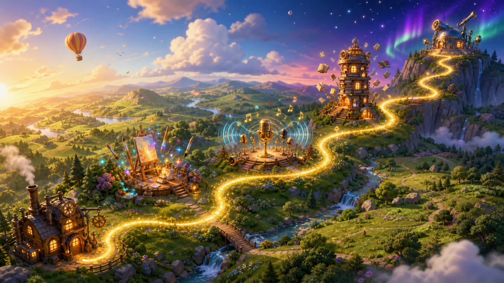
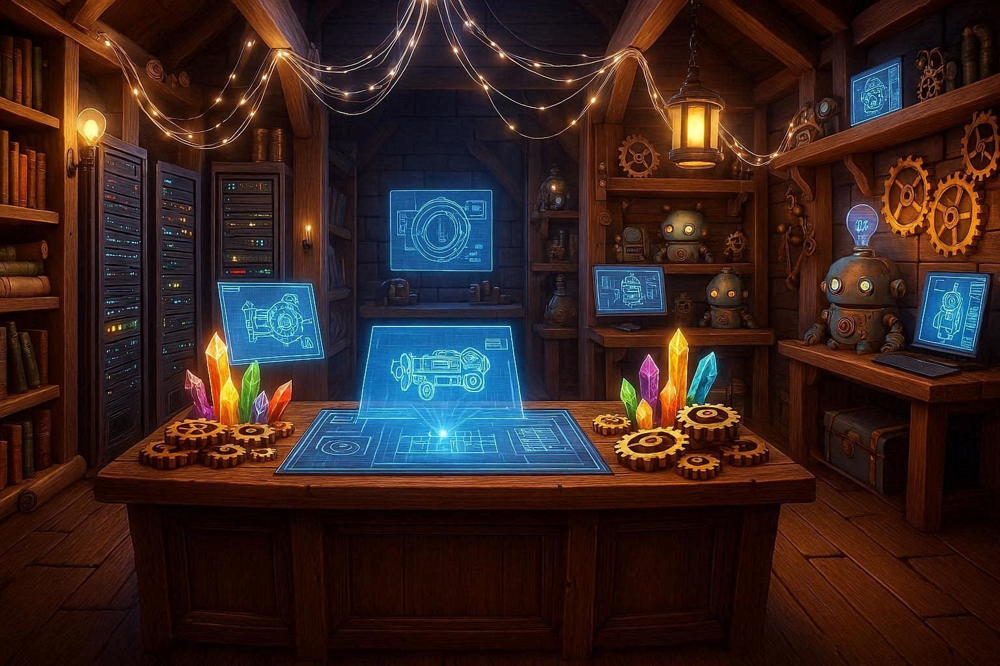
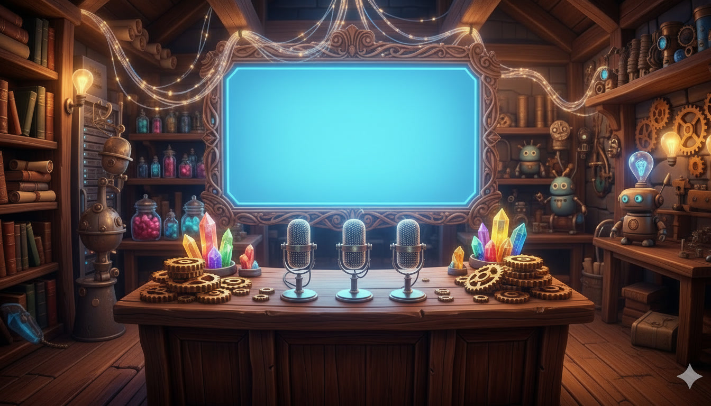
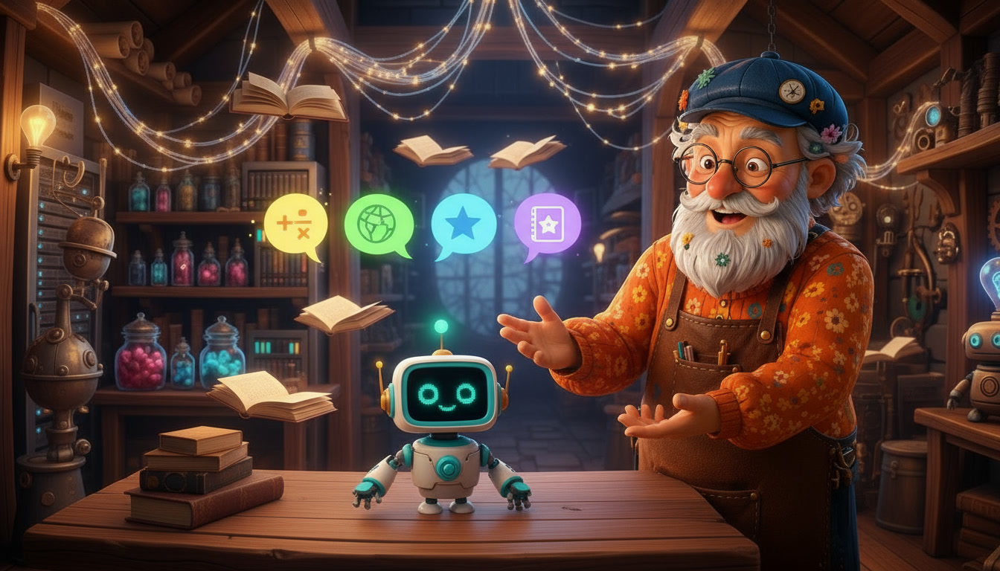
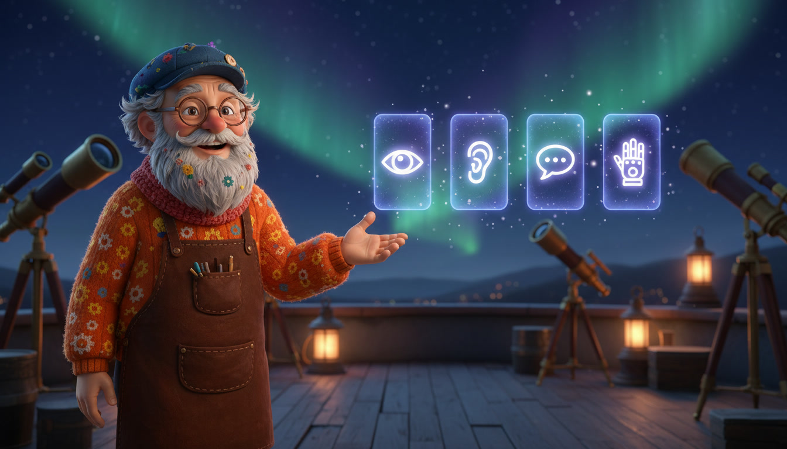

Chapitre 1 · Écran 1/7
IA Explorers
Apprendre à utiliser l'Intelligence Artificielle en s'amusant !

Chapitre 1
La drôle de machine
La drôle de machine
Chapitre 2
La fabrique à images
La fabrique à images
Chapitre 3
Le détective de sons
Le détective de sons
Chapitre 4
Bot le Bavard
Bot le Bavard
Chapitre 5
Le toit aux étoiles
Le toit aux étoiles
Qui sera ton héros ?
Choisis d'abord ton personnage pour explorer ce monde !
0
Ce matin, tu te promènes dans la ville... Au bout de la rue, tu aperçois une étrange boutique magique : l'Atelier de Léon. Et si tu allais voir de plus près ?
✨ Touche l'enseigne pour entrer dans la boutique !
Infos Parents ▼ Voir
Avant d'entrer, demandez à votre enfant : « Sais-tu ce qu'est une Intelligence Artificielle ? » Accueillez ses idées sans les corriger pour l'instant !
Derrière le comptoir, voici Léon. Son atelier magique fabrique des choses grâce à l'IA !
👴 Léon dit :
« Ah, un explorateur ! Veux-tu savoir ce que c'est, l'IA ? »
Au cœur de l'atelier, Léon s'approche de sa machine mystérieuse.
👴 Léon dit :
« L'IA, c'est une machine qui apprend. On lui montre plein d'exemples... et après, elle t'aide à créer ! »
Infos Parents ▼ Voir
C'est la notion d'entraînement (Machine Learning). L'IA apprend avec des exemples, tout comme un enfant s'améliore avec l'entraînement.
👴 Léon te lance un défi :
« Attention, l'IA ne sait pas tout faire ! Sauras-tu trouver ce qu'elle ne peut pas faire ? »

🎉 Victoire !
Chapitre 1 terminé — "La drôle de machine" !
Étoiles gagnées
Apprenti
Inventeur
Badge débloqué !
NOUVEAU👨👩👧 Mode Famille
🔍 Détective Maison !
🎯 Votre mission
Cherchez ensemble des objets à la maison qui utilisent l'intelligence artificielle.
💡 Indice : téléphones vocaux, tablettes, recommandations vidéos...
🧒
Question : « As-tu déjà parlé à une IA sans le savoir ? »
🌟
Imagine : « Une IA peut-elle vraiment créer une œuvre d'art toute seule ? Pourquoi ? »
De retour à l'atelier, Léon t'invite à le suivre vers une porte mystérieuse...
👴 Léon dit :
« Suis-moi ! Je vais te montrer ma machine à images ! »
Au centre de la pièce, une machine étrange flotte au-dessus d'un établi.
👴 Léon dit :
« Cette machine peut dessiner avec des mots ! On lui parle, et elle crée une image ! »
▌
Léon tape sa demande... La machine s'allume !
👴 Léon dit :
« Voilà ! L'IA a compris mes mots et a créé une image rien que pour nous ! »
Mais comment la machine sait-elle dessiner ?
👴 Léon explique :
« Elle a regardé des millions d'images avant ! C'est comme ça qu'elle a appris ! »
Infos Parents ▼ Voir
Les modèles de génération d'images (Stable Diffusion, DALL·E, Midjourney) ont été entraînés sur des milliards d'images. Ils ne « créent » pas vraiment : ils recombinent ce qu'ils ont vu.
Léon affiche d'autres images... mais elles sont bizarres !
👴 Léon rigole :
« Regarde, une main à 6 doigts, un garçon sans bras... L'IA peut se tromper ! »
Léon devient un peu plus sérieux...
👴 Léon ajoute :
« Mais attention : la machine n'a pas de cœur. Elle ne dessine pas parce qu'elle aime ça — elle crée ce qu'on lui demande, c'est tout ! »
▌
👴 Léon te lance un défi :
« À toi ! Choisis 3 mots : un sujet, une couleur, un style — et regarde ! »
🎉 Bravo !
Chapitre 2 terminé — "La fabrique à images" !
Étoiles gagnées
Artiste
Numérique
Badge débloqué !
NOUVEAULéon te tend un casque audio et te fait signe de le suivre dans une nouvelle salle pleine de microphones et de lumières...
👴 Léon dit :
« Bienvenue dans mon labo des sons ! Mets le casque, et écoute bien... »
Léon parle à un micro. Sur l'écran, les ondes sonores se transforment en mots !
👴 Léon dit :
« Cette IA peut écouter ta voix et la transformer en mots écrits ! C'est comme ça que les assistants vocaux comprennent ce que tu dis. »
Léon prononce le mot « bonjour ». Sur l'écran, les ondes dansent puis... le mot s'écrit tout seul !
👴 Léon dit :
« Vois ! Elle a compris que je disais 'bonjour'. Elle a transformé ma voix en lettres ! »
Léon active une boîte parlante. Une voix robotique commence à chanter !
👴 Léon dit :
« Et l'IA peut aussi parler ! Mais attention : elle n'a pas de bouche. Elle imite une voix, c'est tout. »
Une grande machine pleine de touches s'allume seule et joue une mélodie fantastique...
👴 Léon dit :
« L'IA peut même inventer de la musique ! Elle a écouté plein de chansons, et maintenant elle compose elle-même ! »
Léon murmure quelque chose. L'écran affiche... n'importe quoi !
👴 Léon dit :
« Mais elle peut se tromper aussi ! Si tu parles trop vite ou s'il y a du bruit, elle comprend de travers ! »

Léon te lance un défi : 3 sons mystères diffusés par 3 micros. Pour chacun, l'IA propose une transcription... parfois drôlement fausse !
👴 Léon dit :
« À toi ! Écoute chaque son et regarde ce que mon IA a 'entendu'. Elle a parfois une drôle d'imagination ! »
L'IA a entendu :
— —
🎉 Bravo !
Chapitre 3 terminé — "Le détective des sons" !
Étoiles gagnées
Maître
des Oreilles
Badge débloqué !
NOUVEAULéon t'emmène dans une bibliothèque magique pleine de livres flottants. Près d'une table en bois, un petit robot blanc t'attend...
👴 Léon dit :
« Voici Bot, mon assistant qui adore lire ! Il connaît plein de mots, il peut tenir une conversation comme nous ! »
Léon pose une question à Bot : « Quelle est la couleur du ciel ? ». Sur l'écran-visage de Bot, des lettres apparaissent...
👴 Léon dit :
« Tu vois ! Bot a compris ma question et il répond ! C'est ça, l'intelligence artificielle qui parle. »
Mais comment Bot connaît-il toutes ces réponses ? Léon t'explique : Bot a 'lu' des millions de livres avant de pouvoir parler !
👴 Léon dit :
« Pour devenir si bavard, Bot a avalé plein de livres, plein de textes, plein d'histoires ! C'est en lisant qu'il a appris à parler. »
Léon pose une nouvelle question : « Combien font 1 + 1 ? ». Bot répond avec un grand sourire... mais sa réponse est complètement fausse !
👴 Léon dit :
« Aïe, Bot s'est trompé ! Il a dit que 1 et 1 font 5 ! Parfois l'IA invente des réponses fausses sans le savoir. C'est pour ça qu'il faut vérifier ! »
Léon prend un ton plus sérieux. Il s'approche de toi pour t'expliquer une chose importante au sujet de Bot...
👴 Léon dit :
« Attention : même si Bot parle bien, ce n'est pas un ami. Il n'a pas de cœur, il ne ressent rien. Il fait juste semblant. »

À toi ! Choisis une question parmi les 4, et regarde comment Bot répond. Es-tu sûr qu'il a raison ?
👴 Léon dit :
« Choisis une question et observe la réponse de Bot. Mais attention, il peut se tromper ! »
🎉 Bravo !
Chapitre 4 terminé — "Bot, l'IA qui parle" !
Étoiles gagnées
Maître
des Mots
Badge débloqué !
NOUVEAULéon t'emmène par un escalier en colimaçon... vous arrivez sur le toit de l'atelier ! Devant toi, un ciel étoilé magique avec des aurores boréales, des télescopes en cuivre, des planisphères qui flottent.
👴 Léon dit :
« Viens... j'ai un dernier secret à te montrer. Tu sais, l'IA n'est pas seulement dans mon atelier... elle est partout autour de toi. »
Léon claque des doigts. Soudain, autour de toi, plein d'hologrammes apparaissent.
👴 Léon dit :
« Regarde ! Le GPS qui te guide, l'appli qui te propose des dessins animés, l'assistant qui répond à tes questions, le jeu qui devient plus difficile quand tu deviens fort... tout ça, c'est de l'IA ! Tu en utilises déjà tous les jours. »
Mais Léon prend un ton sérieux. Trois hologrammes apparaissent l'un après l'autre, tous FAUX.
👴 Léon dit :
« Mais attention ! L'IA peut se tromper... ou même inventer des choses fausses avec aplomb. Garde toujours ton esprit critique : vérifie ce que te dit l'IA, essaye de comprendre par toi-même. C'est toi le chef, pas la machine ! »
Léon tend les mains vers toi. Les étoiles dans le ciel se mettent à bouger, à se rassembler... et forment ton portrait à toi, là-haut !
👴 Léon dit :
« Tu sais maintenant tout ce que sait faire l'IA. Et toi maintenant... qu'est-ce que TU vas inventer avec elle ? Le futur t'appartient ! »

Bravo !
Tu es desormais un vrai Explorateur de l'IA !
+7 ⭐